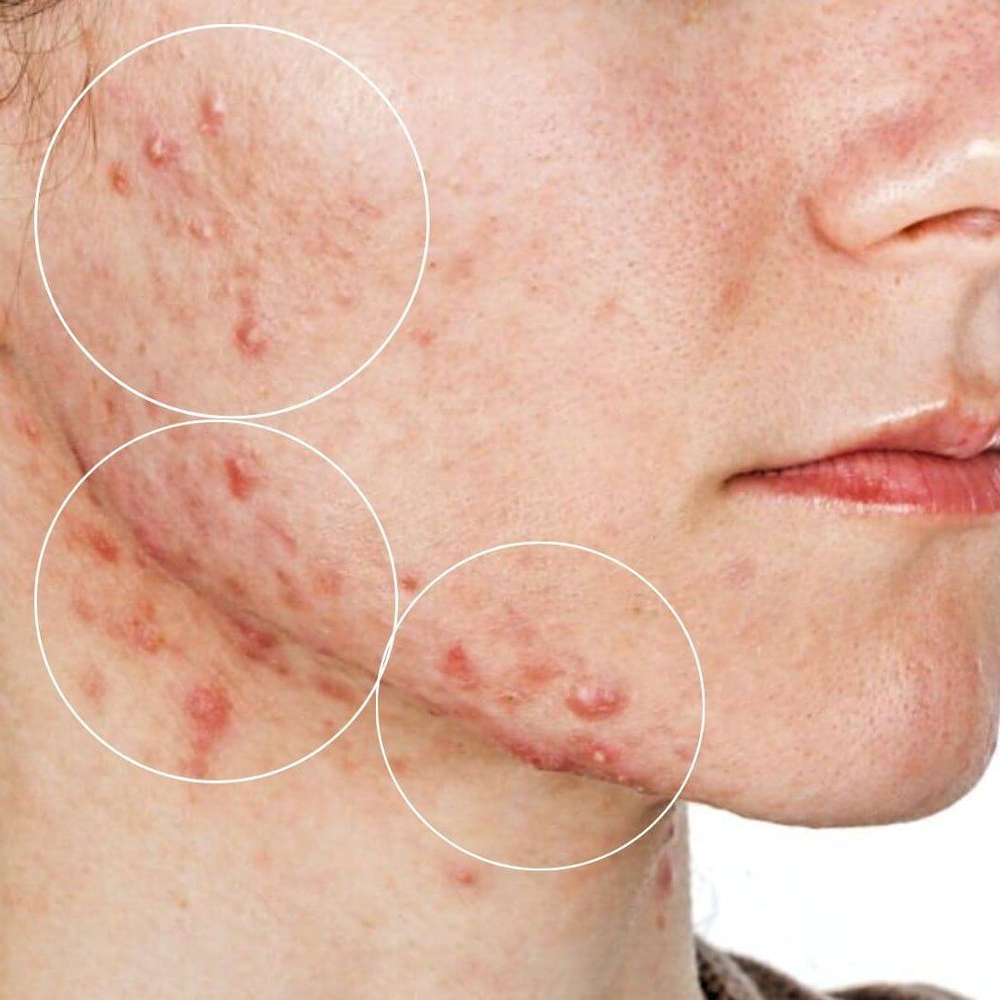

Acne
Understanding Acne: Causes, Types, and Effective Treatments
What is Acne?
Acne is a common skin condition that affects people of all ages, particularly adolescents and young adults. It occurs when hair follicles become clogged with oil and dead skin cells, leading to various types of blemishes. While acne is not a life-threatening condition, it can have significant psychological effects, impacting self-esteem and quality of life.


Types of Acne
- Comedonal Acne: Characterized by closed (whiteheads) or open (blackheads) comedones, this type occurs when pores are clogged with oil and dead skin.
- Inflammatory Acne: This includes papules (small red bumps) and pustules (pus-filled bumps), which arise due to inflammation in the skin.
- Nodular Acne: Larger, painful lumps beneath the skin surface that can last for weeks and may lead to scarring.
- Cystic Acne: A severe form of acne that results in large, painful cysts filled with pus. Cystic acne often requires medical treatment.
Causes of Acne
- Hormonal Changes: Fluctuations in hormones, particularly androgens, can lead to increased oil production, especially during puberty, menstrual cycles, or hormonal therapies.
- Excess Oil Production: Overactive sebaceous (oil) glands can contribute to clogged pores.
- Bacteria: Propionibacterium acnes (P. acnes) bacteria can thrive in clogged pores, leading to inflammation and breakouts.
- Diet: Some studies suggest that diets high in refined sugars and dairy may exacerbate acne.
- Stress: Increased stress can trigger hormonal changes that worsen acne.
- Medications: Certain medications, including corticosteroids and lithium, can contribute to the development of acne.
Get personalized skin care advice, AI-based diagnosis, and expert consultation. Please sign in to access all features.